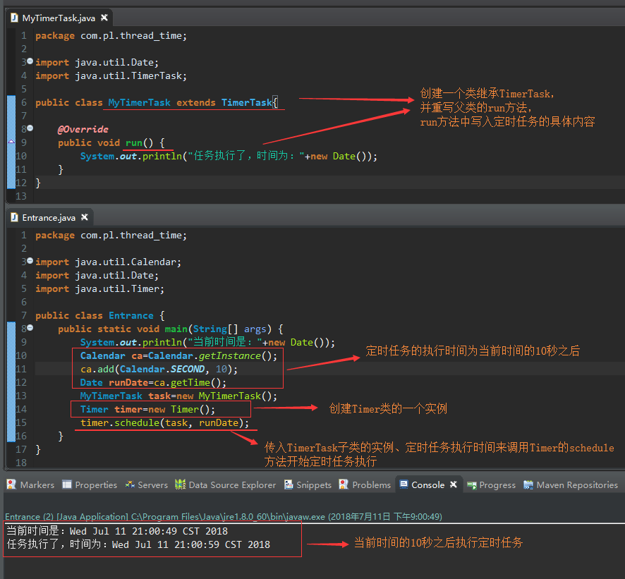
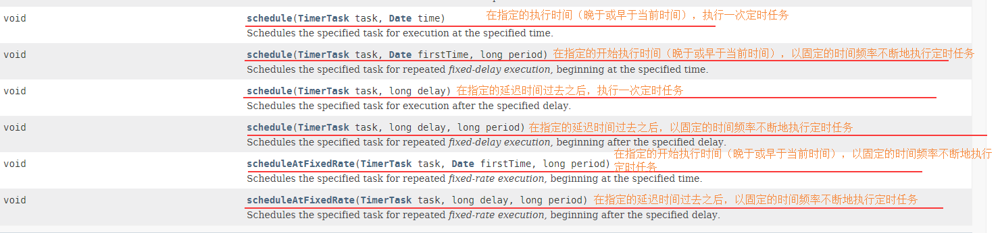
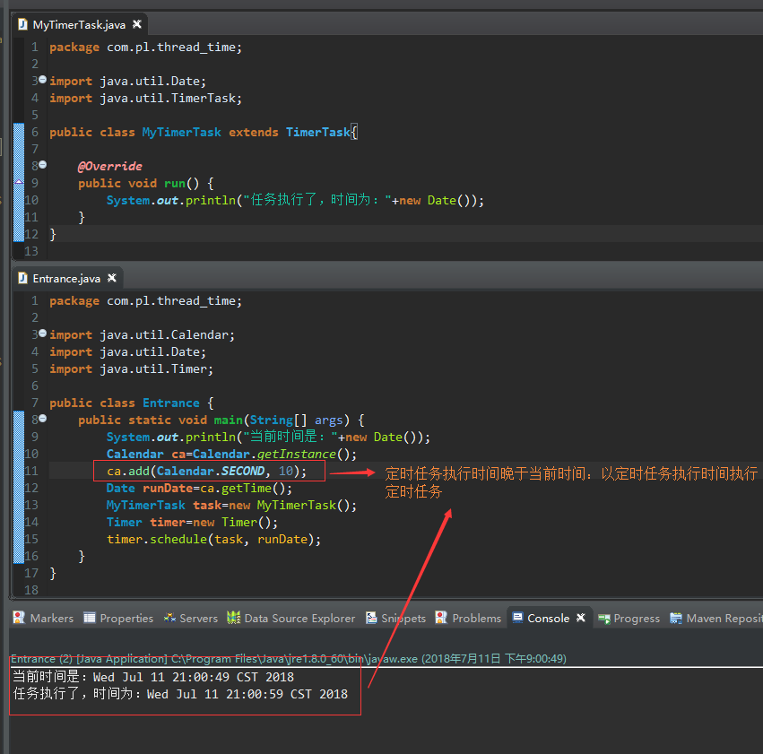

定时器Timer简介
定时器Timer是JDK提供的用于执行定时任务的一个类，定时器Timer类要配合TimerTask这个抽象类来使用，Timer类的主要作用是设置定时计划任务，TimerTask类的主要作用是设置定时计划任务的具体内容
执行定时计划任务的大体步骤
具体步骤：
第一步：创建一个类继承自TimerTask，并重写run方法，在run方法中写入定时任务具体要做什么
第二步：创建一个Timer对象
第三步：调用Timer的schedule方法或scheduleAtFixedRate方法（传入第一步中TimerTask子类的实例、定时任务开始时间等参数）开启定时任务执行
样例如下：

定时器Timer的定时方法总览

定时任务执行时间晚于当前时间：以定时任务执行时间执行定时任务

定时任务执行时间早于当前时间：以当前时间执行定时任务（即马上执行）

未完待续